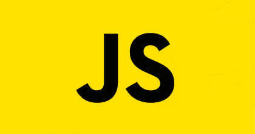

LENGUAJES
1. JAVA

Java es un lenguaje de programación orientado a objetos que se incorporó al ámbito de la informática en los años noventa, se usa para el desarrollo de aplicaciones que convierten a la Web en un elemento más interesante y útil. Java
2. C

C es un lenguaje de programación (considerado como uno de los más importantes en la actualidad) con el cual se desarrollan tanto aplicaciones como sistemas operativos a la vez que forma la base de otros lenguajes más actuales como Java, C++ o C# C
3. PYTHON

Python es un lenguaje de programación de alto nivel, orientado a objetos, con una semántica dinámica integrada, principalmente para el desarrollo web y de aplicaciones informáticas. Python
4. C#

C#" es un lenguaje de programación multiparadigma desarrollado y estandarizado por la empresa Microsoft como parte de su plataforma .NET, que después fue aprobado como un estándar por la ECMA e ISO. c#
5. C++
C++ es un lenguaje de programación diseñado en 1979 por Bjarne Stroustrup. La intención de su creación fue extender al lenguaje de programación C mecanismos que permiten la manipulación de objetos. En ese sentido, desde el punto de vista de los lenguajes orientados a objetos, C++ es un lenguaje híbrido. C++
6. VISUAL BASIC .NET

Visual Basic .NET (VB.NET) es un lenguaje de programación orientado a objetos que se puede considerar una evolución de Visual Basic implementada sobre el framework .NET. Visual Basic.NET
7. JAVASCRIPT
JavaScript (JS) es un lenguaje de programación ligero, interpretado, o compilado justo-a-tiempo (just-in-time) con funciones de primera clase. Si bien es más conocido como un lenguaje de scripting (secuencias de comandos) para páginas web, y es usado en muchos entornos fuera del navegador, tal como Node.js, Apache CouchDB y Adobe Acrobat. JavaScript es un lenguaje de programación basada en prototipos, multiparadigma, de un solo hilo, dinámico, con soporte para programación orientada a objetos, imperativa y declarativa. JavaScript
8. PHP

PHP es un lenguaje de código abierto muy popular especialmente adecuado para el desarrollo web y que puede ser incrustado en HTML. PHP
9. SWIFT

Swift es un lenguaje de programación multiparadigma creado por Apple enfocado en el desarrollo de aplicaciones para iOS y macOS. Fue presentado en la WWDC 2014 y está diseñado para integrarse con los Frameworks Cocoa y Cocoa Touch; puede usar cualquier biblioteca programada en Objective-C y llamar a funciones de C. Swift
10. SQL

SQL es un lenguaje de dominio específico, diseñado para administrar, y recuperar información de sistemas de gestión de bases de datos relacionales.2 Una de sus principales características es el manejo del álgebra y el cálculo relacional para efectuar consultas con el fin de recuperar, de forma sencilla, información de bases de datos, así como realizar cambios en ellas. SQL
11. RUBY

Ruby es un lenguaje de programación dinámico y de código abierto enfocado en la simplicidad y productividad. Su elegante sintaxis se siente natural al leerla y fácil al escribirla. Ruby